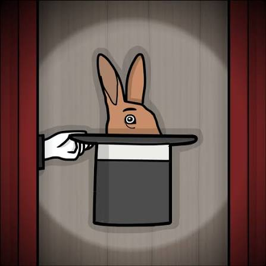

“A magical show full of surprises.”
The Mr. Rabbit Magic Show é uma aventura de quebra-cabeças em estilo point-and-click criada pela Rusty Lake para comemorar os 10 anos da franquia. O jogo coloca o jogador diante de um estranho espetáculo de mágica apresentado pelo extravagante Mr. Rabbit. O que inicialmente parece ser apenas um show divertido rapidamente se transforma em uma experiência surreal, cheia de situações inesperadas, enigmas e acontecimentos que quebram a própria lógica do jogo. A aventura é composta por 20 atos, cada um apresentando um pequeno desafio ou truque de mágica diferente. O jogador precisa observar atentamente a cena, interagir com os elementos e descobrir como cada apresentação deve funcionar. Apesar de ser uma experiência curta, o jogo esconde diversos segredos e referências ao universo de Rusty Lake.
Tudo começa quando o jogador é convidado para assistir ao misterioso espetáculo de Mr. Rabbit, um mágico com aparência de coelho que promete uma apresentação cheia de truques surpreendentes. Durante os primeiros atos, o jogador acompanha diferentes números de mágica e precisa ajudar Mr. Rabbit a realizá-los corretamente. Entretanto, o espetáculo começa a apresentar falhas e acontecimentos cada vez mais estranhos. O que parecia ser simplesmente um show começa a “falhar”, levando o jogador para uma situação completamente diferente. A aventura então deixa o palco e leva o jogador para uma representação do escritório da própria Rusty Lake, onde é necessário realizar diferentes tarefas relacionadas à comemoração dos 10 anos do estúdio. Essa mudança é um dos maiores diferenciais do jogo: o jogador deixa de ser apenas um espectador do espetáculo e passa a fazer parte da própria experiência.
Embora tenha sido criado principalmente como uma celebração do aniversário da desenvolvedora, The Mr. Rabbit Magic Show possui diversas conexões com o universo de Rusty Lake. Mr. Rabbit já era conhecido pelos jogadores através de outros títulos da série, e o jogo está oficialmente incluído na lista de jogos do universo Rusty Lake. Além disso, existem diversas referências visuais, objetos e personagens relacionados aos jogos anteriores. O jogo também possui um segredo particularmente importante: jogadores atentos podem encontrar uma prévia do próximo jogo da franquia, Servant of the Lake, escondida dentro da aventura.